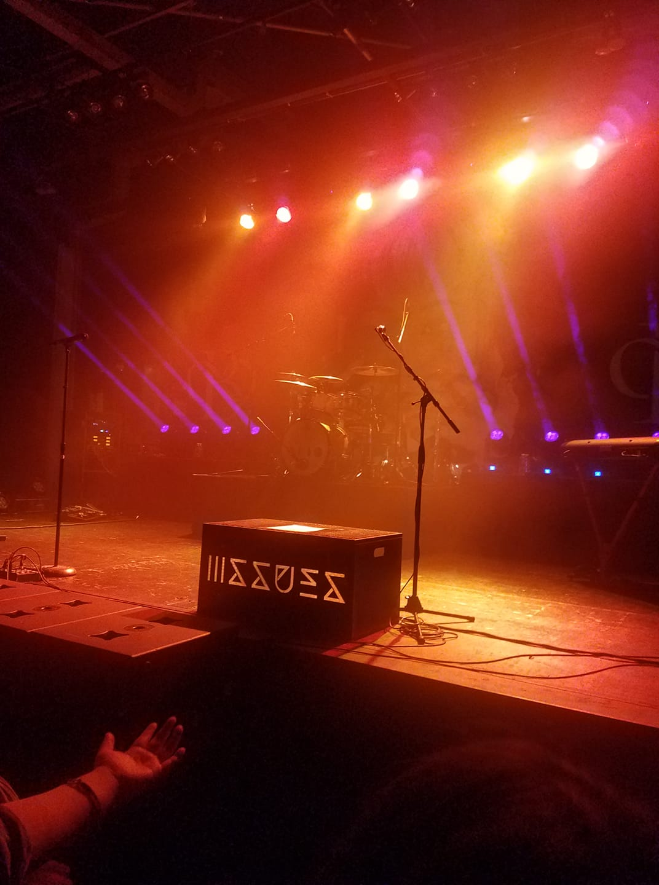
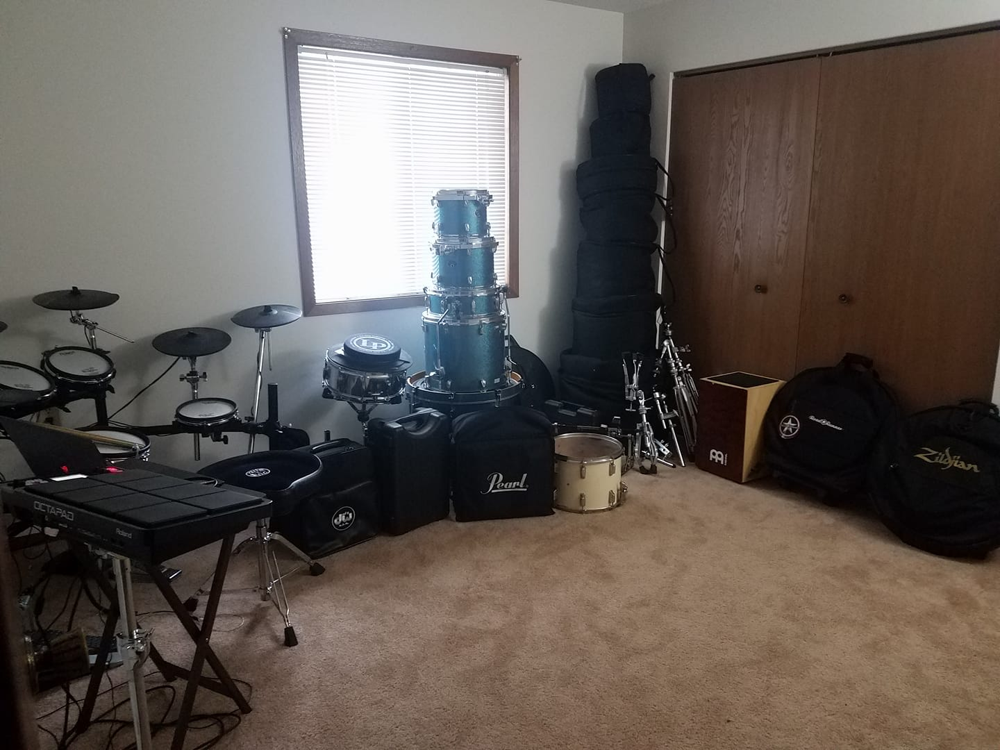

Watching Drama

Watching Chinese drama is something he likes to do a lot. These drama are mainly ancient Chinese drama based on fictional times where they can fly, jump, and sometimes can cast magic. He mainly likes to watch dramas that have fighting in them. These drama usually have about 60-90 episodes with each running about 40 minutes each. He has been watching Chinese drama since he was in High School. He estimates that the number of drama he as watched is around 35 drama.
Attending Concerts
The type of concerts that he likes to go to are indie music or also known as independent music. He also likes a mixture of other genre such as metal and rock. But the majority of the concerts that he goes to are instrumental band concerts. What this means is that there are no singing involved. The band only plays music with an electric guitarist, bass guitarist, and drummer. There are usually around 4-6 musicians in the band. The bands that he usually goes see in concert are Polyphia, Chon, Intervals and Animals As Leaders. During these concerts, there are usually a mosh pit around the center of the concert area. In the mosh pit, the audience would aggressively dance, jump, and bump each other. They also push each other around while still dancing to the music. Mosh pit is something that does not happen all the time at these concerts as it is dependent on the concert location. If the venue does not have the allocated space, the bouncers or security for the venue will not allow the mosh pit to happen.
Playing Drums
He likes to play drums on his free time. The type of music that he likes to play are the same as the concerts he attends locally here in the Minneapolis area. He has an electric drum kit along with an acoustic drum kit. Both drum kits are of high quality and are expensive. He only plays for fun and does not have a band to play with. He also has many custom drum snare that he has purchased for himself. A snare is what a music band would be playing such as during a parade or at a football game.
Thank you and I hope you enjoyed what you learned about Luke Her!
Return Back to the Home Page Return to Home Page »